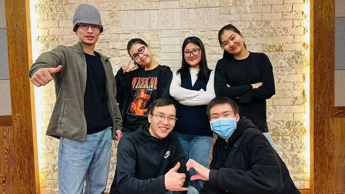

Энэ хуудас замаа алдсан бололтой
Уучлаарай, таны хайж буй хуудас олдсонгүй. Устгагдсан, шилжсэн эсвэл хаяг нь буруу бичигдсэн байж магадгүй.

Уучлаарай, таны хайж буй хуудас олдсонгүй. Устгагдсан, шилжсэн эсвэл хаяг нь буруу бичигдсэн байж магадгүй.
